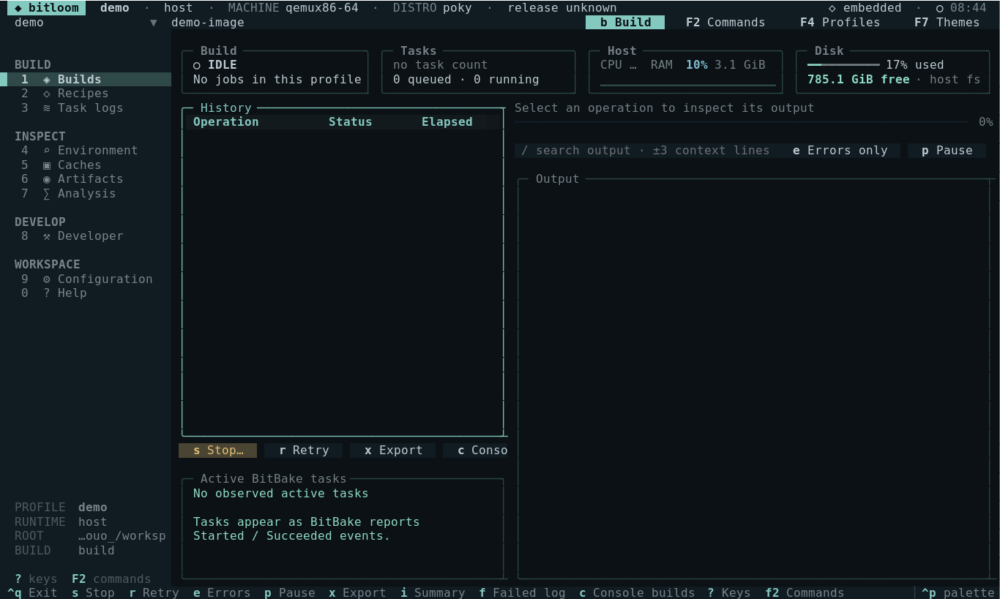
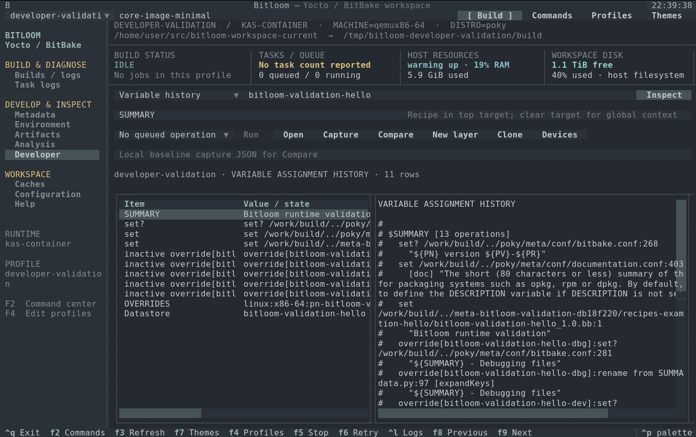
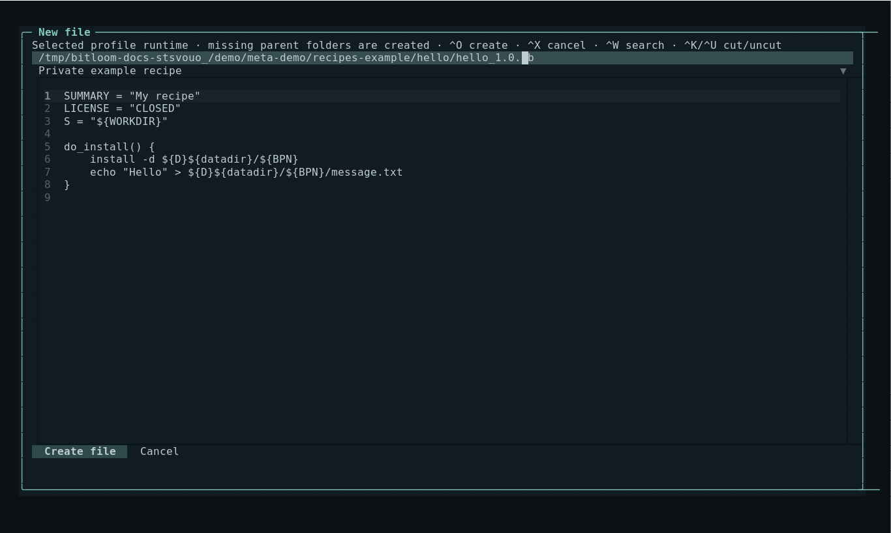
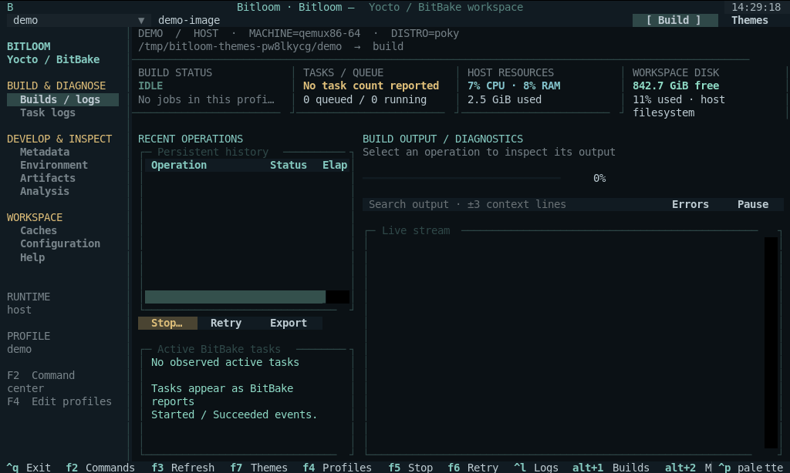

Build control
Independent reconnectable build service, serial queue, original-profile retries, task progress, persistent history, SDKs and per-recipe tasks.
A practical cockpit for BitBake builds, recipe development, layer inspection and the logs you need when something breaks.

Bitloom is inspired by the idea behind yoctui: bringing everyday Yocto and BitBake work into a terminal interface. Thank you to 0xbadcaffe, the author of yoctui, for the inspiration and for sharing the project with the community. Bitloom has its own implementation and interface.
Browse metadata, queue work and inspect evidence without losing the context of your build profile.
Independent reconnectable build service, serial queue, original-profile retries, task progress, persistent history, SDKs and per-recipe tasks.
Expandable layer tree, source previews and content search with file/line locations across recipes, appends, classes and YAML. Ask BitBake about active layers, overlays and dependencies.
Modify, build, finish and upgrade recipes. Deploy to devices. Hand off to devshell, kernel menuconfig or QEMU.
Streaming output, contextual task-log diagnosis, error filters, warning groups and exportable evidence reports.
Inspect size and age. Analyze reported cache hit rates. Audit downloads. Preview concrete prune plans and recheck each file before deletion.
Resolve and compare environment snapshots, browse dependency edges, inspect signatures and buildhistory changes.
Host, kas, fresh or existing containers and kas-container. Named profiles preserve the command's configuration. Browse and edit runtime-only files; export binary artifacts with SHA-256 verification.
Let a build finish, request a graceful stop where supported, or force termination and select recipe recovery.
Repository versions, layer-series checks, package/architecture manifest comparisons, image artifacts, licenses and command entry points for tests and security classes.
F10 connects sixteen evidence views, layer/recipe creation, profile clones, IDE exports, offline verification and real device jobs.
Numbered sections, single-letter actions on every button, nano editor keys and a built-in reference. All keys.
bitloom --web: the same build service in the browser, with live progress, toasts, summaries and a command palette. Web guide.
Release-aware SBOM quality, VEX, CRA readiness and explained SBOM settings for Scarthgap and Wrynose. Compliance guide.
Create your own distribution, machines, images, recipes and layers with explained, release-aware forms. Studio guide.
Open folders with automatic detection, create pinned Scarthgap/Wrynose projects, clone from Git; every project is a profile. Projects guide.
sbom-cve-check, cve-check and Grype findings with severity, reviews, CSV and CI gates. Vulnerabilities.
Headless CI matrices with JUnit, team profiles, NFS and setup checks, image matrix, device fleet and console builds. Teams guide.
No matching capability. Try a broader term.
Explore all 74 built-in operations →Build and launch Bitloom, configure kas-container, create layers and recipes, develop with devtool and verify every implemented command. Each case lists prerequisites, inputs and expected evidence; optional hardware and classes are identified explicitly.
Sixteen connected views implement all fourteen researched workflows: variable origins, recipe and container files, rebuild signatures, task failures, IDE SDKs, image regressions, measured performance, kas/multiconfig, offline checks, CVE/SPDX, kernel and upgrade review, boards and shutdown evidence.
Preview complete licensed CMake, Meson, Make, Python or Rust fixtures, create and register a layer, clone a profile, capture a baseline and compare after rebuilding. Optional tasks are checked against the selected release. Real device operations retain job/transcript evidence; missing equipment and reports remain unavailable.
Open the Developer guide Run all fourteen experiments → Research and sources →

Download your version from GitHub Releases. Debian and Ubuntu users can install the .deb with bundled Python dependencies; other Linux distributions and WSL2 can use the source archive or wheel. Python 3.10+ is required.
sudo apt install ./bitloom_1.2.3_all.deb
bitloom --demoSource archive, wheel, checksum verification and removal instructions
Start with the sample workspace, then configure a real project with F4. The demo creates metadata only; real commands still need their tools.
Requires Python 3.10+ on Linux or WSL2. Run the setup script after cloning: it installs dependencies in .venv and launches the demo. A 140 × 42 terminal displays the complete layout; smaller terminals hide secondary panels automatically.
./setup-demo.shWheel build, local kas test and reconnect instructions ↗
Source an init script automatically or run from your existing environment. Every target is passed as a quoted argument.
{
"name": "host",
"root": "/work/poky",
"build_dir": "build-qemu",
"mode": "host",
"init_script": "oe-init-build-env"
}Full schema and path rules: user guide · Copy-ready profiles: profile examples
New file opens an editor with recipe and .bbappend templates in the selected host or container runtime. Parent directories are created, and existing files are preserved. Local metadata changes refresh every five seconds; open runtime directory listings refresh every fifteen seconds while idle.
File creation and refresh guide

Choose a profile, enter a target, press F2 and filter the action list. Queue a normal build, compile task, dry run or SDK. The history row records the original profile and exact exit result.
Select the failed history row. Toggle Errors only or search a phrase with context. Open Task logs for the recipe's own compile/fetch log. Export the complete original log or open a concise build report.
Find a recipe in Layers & recipes, choose Modify, and use devtool build while editing its sources. Finish into the selected layer when ready. Interactive commands use your real terminal.
Let finish leaves the build running. Graceful stop sends one SIGINT to a host client or a newly managed container and waits. Force terminates and offers clean for observed active recipes. Owned kas-container force stops record the exact container result; external wrappers require server verification before recovery.
Scan the cache, filter files, select an age and review the concrete prune plan. No automatic deletion. Externally shared caches require coordination. Fetch tasks validate recipe sources with BitBake's checksums.
Resolve two environment snapshots for a target and compare their values. Load dependency graphs from host or container and inspect reverse dependencies. Inspect buildhistory diffs and local repository versions. Keep release builds in separate profiles/directories.
Explain rebuild signatures, trace an image file to its recipe and packagegroup, inspect runtime preflight, compare build snapshots and export redacted reproducibility references. Review source changes before devtool finish/reset. Advisory locks coordinate cooperating cache users; unproven references never trigger automatic removal.
Read inputs, workflow details and practical limits

Press F7 to preview Bitloom, Soft Slate, Linen, Nord, Dracula, Tokyo Night, Catppuccin Mocha, Gruvbox, Solarized Dark, Ocean, Forest, Ember, Paper or High Contrast. Save restores the palette next session; Cancel restores your previous choice. Light and dark themes adapt tables, dialogs, logs and editor backgrounds.

These captures come from the running Textual app using its Pilot driver. They show a sample workspace, not a claimed successful image build. Click a screenshot to enlarge.

Unit/UI tests cover command quoting, queueing, history, cancellation, metadata, cache boundaries and interface interaction. On 2026-10-10, core-image-minimal for qemux86-64 completed through Runner and kas-container in 57m 10s. All 4,064 tasks succeeded; the rootfs archive and eight post-build runtime probes were verified.

Class-dependent actions need matching release configuration. Cache inventories and dependency graphs are bounded. Layer compatibility parsing is advisory; BitBake metadata parsing is authoritative.